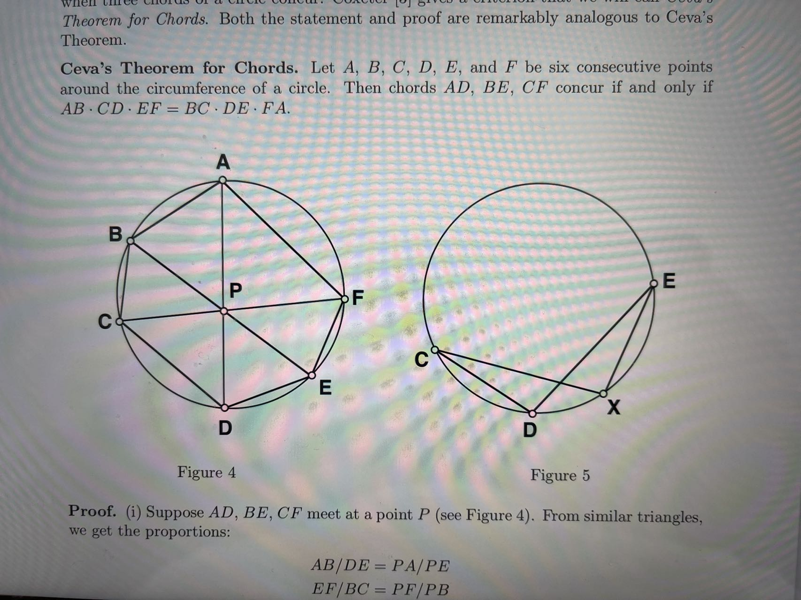

Before you look at the problem, I like to recommend a book "Over and Over Again" by Professor Gengzhe Chang, who taught me Calculus, and his colleague Professor Thomus W. Sederberg. It is an enlightening read, and introduces several important concepts and techniques of advanced mathematics to high school students.
Interesting problems to solve:
Problem No. 1
Use +, -, *, /, (, and ) on each of the following four integers to produce 24
- 3, 3, 7, 7
- 4, 4, 7, 7
- 4, 4, 10, 10
For example, for 1,5,5,5, the answer is (5 - 1/5) * 5 = 24
Problem No. 2

Problem No. 3
Problem No. 4
$$ \text{Let } F(z) = \frac {z-i}{z+i} \text{ for all complex number } z \neq i;$$ $$\text{and let} \; z_k = F(z_{k-1}) \text{ for all positive integer } k$$ $$ \text{Given } z_0 = \frac {1}{137} + i, \; find \; z_{2002}$$